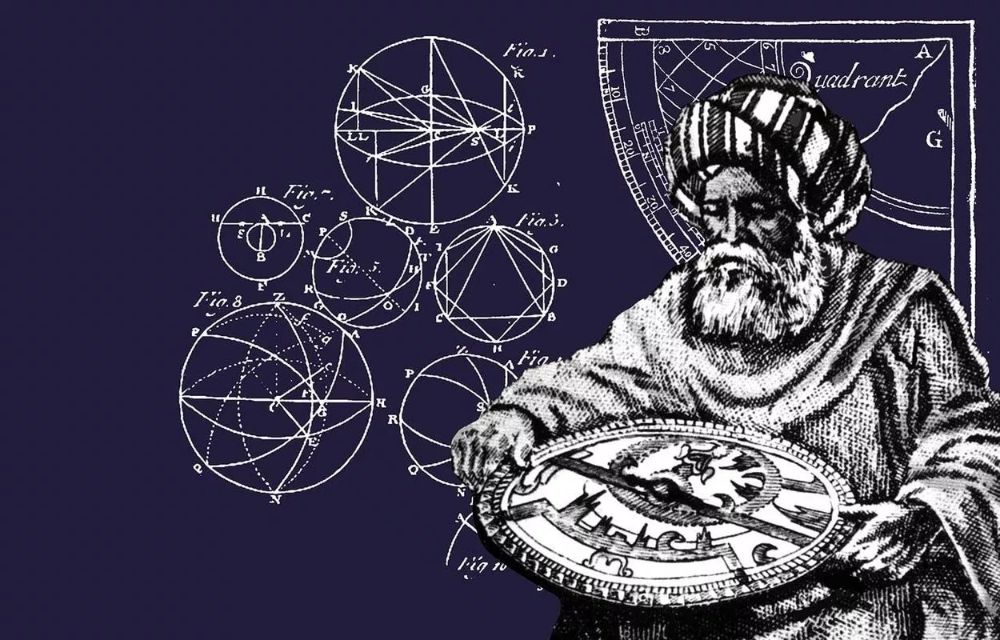

Welcome to the Mathematical World!
Al-Battani
Refiner of Astronomical Observations and Trigonometric Pioneer
Al-Battani (c. 858 – 929 CE), also known in Latin as Albatenius, was an Arab astronomer, mathematician, and astrologer whose observational precision and theoretical contributions had a profound impact on both Islamic and European astronomy. He was born in Harran (in modern-day Turkey) and later worked in Raqqa, Syria, under the Abbasid Caliphate.

His most influential work is the astronomical treatise Kitāb al-Zīj (The Book of Astronomical Tables), often referred to as the Zīj al-Sābi’. This comprehensive work included detailed planetary models, eclipse calculations, solar and lunar tables, and refined values for celestial phenomena. His observations were so accurate that they remained in use for centuries and were frequently referenced by later astronomers such as Copernicus and Tycho Brahe.
In mathematics, Al-Battani made important contributions to trigonometry. He replaced the use of Greek chords with modern sine functions, thereby simplifying computations. He established key trigonometric relationships and identities, such as:
- \
- \
He also compiled accurate tables of sines and tangents and introduced improved techniques for solving right-angled and spherical triangles, helping to separate trigonometry from astronomy as an independent discipline.
Al-Battani calculated the length of the solar year as 365 days, 5 hours, 46 minutes, and 24 seconds — only two minutes off the modern value. He also refined values for the inclination of the Earth's axis, the precession of the equinoxes, and the eccentricity of the Earth's orbit. His observations were based on nearly 40 years of systematic data collection using instruments like the armillary sphere and the mural quadrant.
- Replaced Ptolemaic chord functions with modern sine and tangent functions
- Compiled precise astronomical tables and trigonometric identities
- Calculated the solar year length with remarkable accuracy
- Influenced Copernicus and European Renaissance astronomy
Al-Battani's Zīj was translated into Latin in the 12th century and widely used in Europe under the title De Scientia Stellarum. His blend of observational rigor and mathematical innovation ensured that his legacy shaped both Islamic and Western scientific traditions.
All rights reserved by the Mathematical Unity
Contact: +8801400044645
Email: mathematicalhorse1453@gmail.com
Our Discord Server: Mathematical Unity [Ulus Riyadiyat]